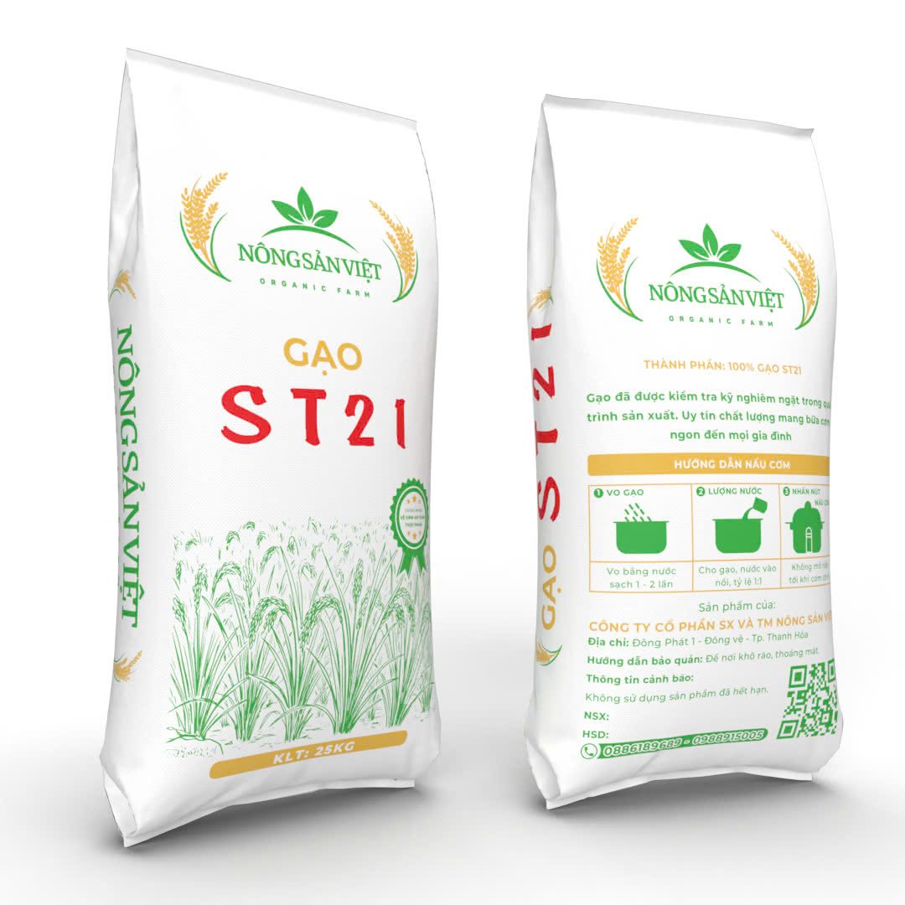
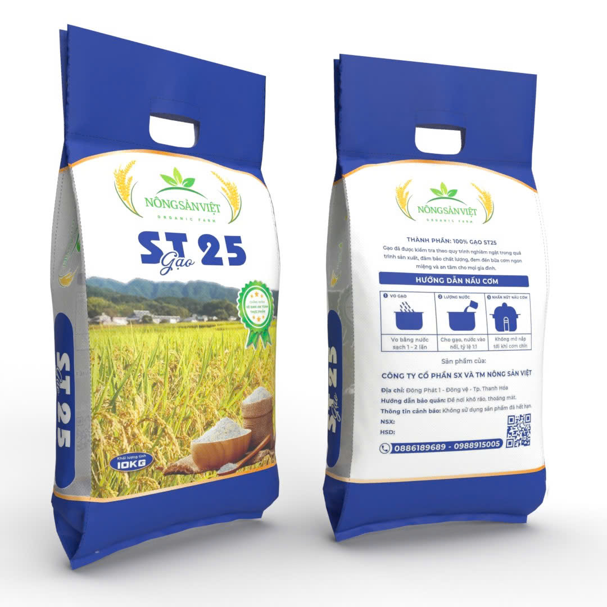
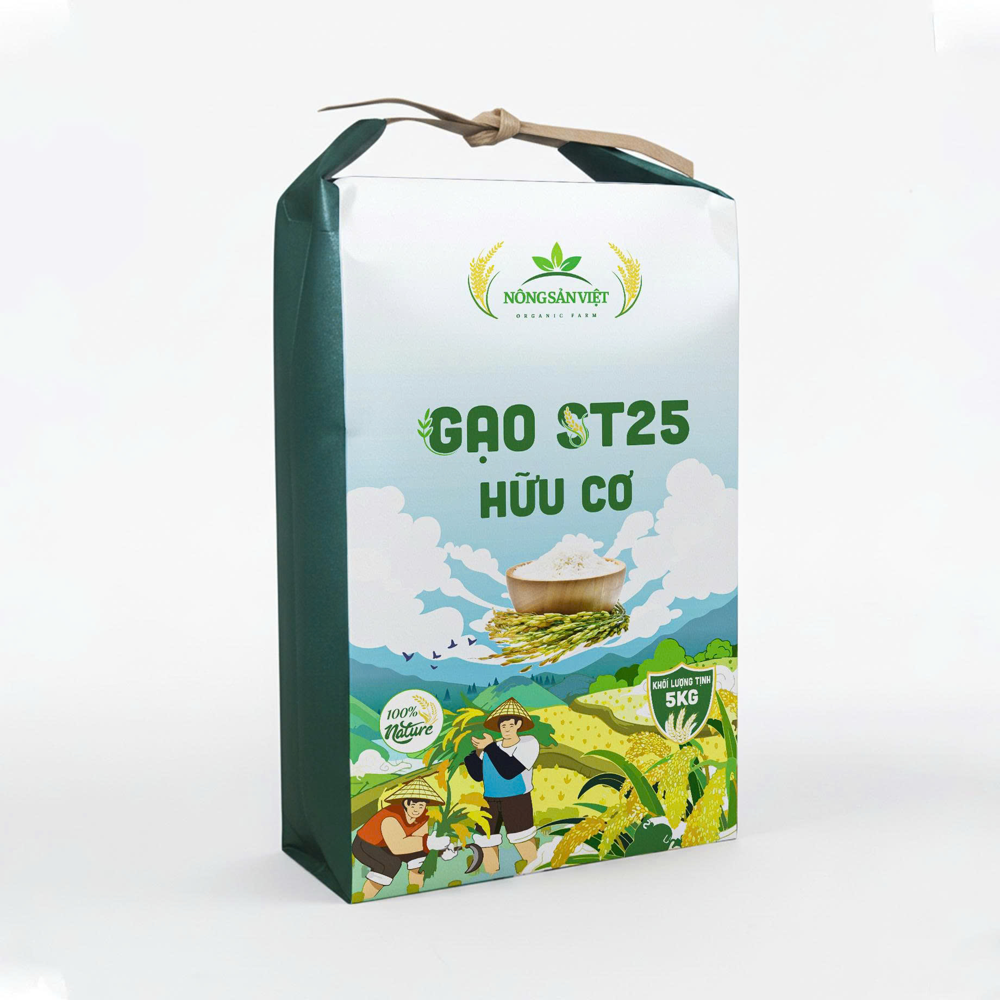
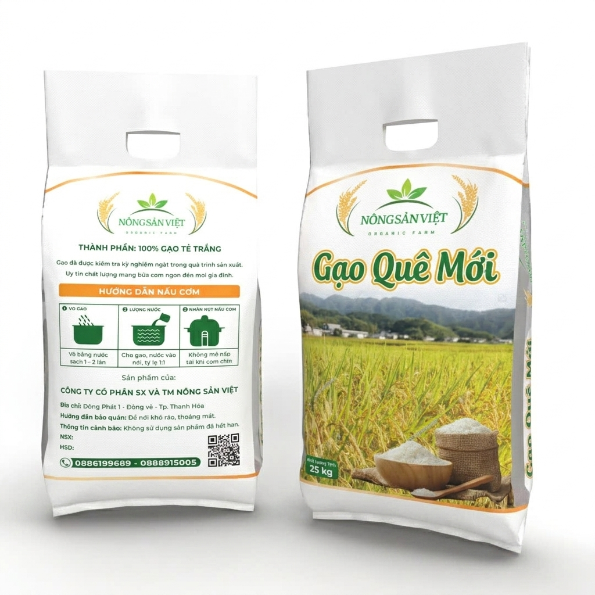

Dẻo thơm tuyển chọn
Gạo ST21
Gạo ST21 có hạt gạo trắng trong, cơm dẻo mềm, vị ngọt hậu và hương thơm nhẹ, phù hợp cho bữa cơm gia đình hằng ngày.
ST21Dẻo mềmThơm nhẹ25kg
Xem chi tiếtDanh mục sản phẩm
Chọn nhanh sản phẩm phù hợp cho gia đình, nhà hàng, bếp ăn hoặc đại lý. Mỗi trang chi tiết đã có canonical, Open Graph image và dữ liệu có cấu trúc phục vụ SEO.

Gạo ST21 có hạt gạo trắng trong, cơm dẻo mềm, vị ngọt hậu và hương thơm nhẹ, phù hợp cho bữa cơm gia đình hằng ngày.

Gạo ST25 Nông Sản Việt có thành phần 100% gạo ST25, quy cách 10kg, cơm dẻo thơm, vị ngọt hậu và phù hợp cho gia đình cần dòng gạo chất lượng cao.

Gạo ST25 Hữu Cơ 5kg được canh tác theo hướng tự nhiên, hạn chế phân thuốc, không biến đổi gen, không gluten, cho cơm dẻo thơm và vị ngọt lành.

Gạo Đài Thơm hạt thon dài, cơm mềm dẻo vừa, vị ngọt nhẹ và hương thơm dễ ăn cho bữa cơm gia đình hằng ngày.

Gạo Liên Hương có độ dẻo thơm nổi bật, cơm trắng mềm, vị đậm và giữ mùi tốt sau khi nấu.

Dòng gạo mới của Nông Sản Việt, hạt cơm mềm thơm, vị ngọt nhẹ, phù hợp bữa cơm gia đình, bếp ăn và đại lý cần nguồn gạo ổn định.

Gạo Long Hương hạt dài đẹp, cơm ráo mềm, thơm thanh, phù hợp gia đình, nhà hàng và đại lý cần dòng gạo ổn định.